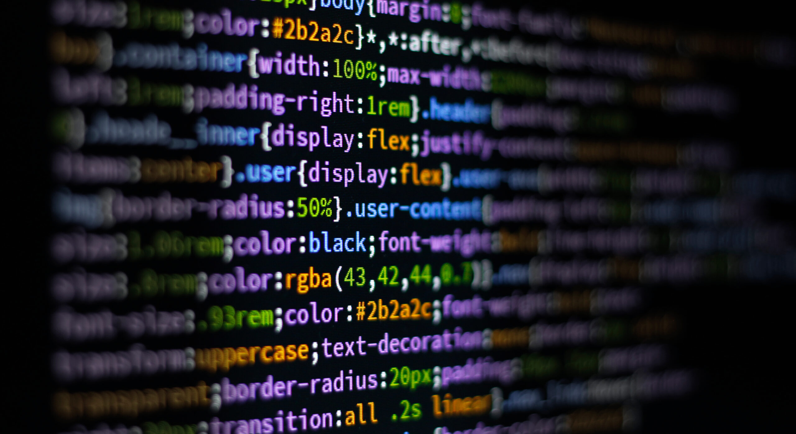

Can Aydın'ın Blogu
Yazılım Geliştirmenin Temelleri
Yazılım geliştirme süreci, analitik düşünce ve problem çözme yeteneklerini geliştirmek için harika bir alandır. Bu yazımda, yazılım dünyasına giriş için gerekli temel adımlardan bahsedeceğim.

- Temel programlama dillerini öğrenmek
- Algoritma ve veri yapıları
- Proje yönetim araçlarını kullanmak
Detaylı bilgi için Patika.dev'e göz atabilirsiniz.
HTML ve CSS ile Web Sayfası Oluşturma
Basit bir web sayfası oluşturmak için HTML ve CSS kullanabilirsiniz. HTML, sayfanızın yapısını oluştururken CSS, tasarım ve stil eklemenizi sağlar.

- HTML ile yapı oluşturun.
- CSS ile renkler ve yazı tiplerini düzenleyin.
- Responsive tasarım oluşturun.
Konuyla ilgili daha fazla bilgi için MDN Web Docs'u ziyaret edin.
Projelerde Takım Çalışmasının Önemi
Yazılım geliştirme projelerinde ekip çalışması, başarılı bir ürün ortaya koymanın temel taşlarından biridir. İyi bir takım dinamiği için aşağıdaki unsurlara dikkat etmek önemlidir.

- Etkili iletişim kurmak
- Görevleri doğru bir şekilde dağıtmak
- Geribildirimlerle gelişimi desteklemek
Takım çalışması tekniklerini öğrenmek için Agile Alliance'a göz atabilirsiniz.